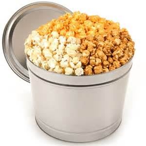

Our Story
The Kernel of Truth is looking for the greatest, savoriest, and most mysterious popcorn that's out there. We're confident we'll find it, but until then enjoy the mishaps we've stumbled upon along the way. We hot air pop our signature blend of kernels, which we then mix into our secret family recipes. Every batch is handmade throughout the day and the result is an irresistible snacking sensation, which has generated lines of historic proportions outside of our retail Shops for decades.

Our great taste has gone global, but hometown values guide us. Although our Popcorn has traveled to New York, Dubai and Singapore, our many Chicago locations keep us firmly grounded at home. When you visit, you can find us in the heart of Chicago’s Magnificent Mile, next to popular theater and tourist attractions, or as you catch a plane at O’Hare International Airport.With more than 100 assorted varieties, we have a delicious blend for every taste. Popcorn’s versatile base lends well to almost any flavor, making a bite-sized snack of all your favorite desserts and treats. We have dozens of sweet variations, including your classic chocolates such as Kit Kat, Snickers and Oreos; candied fruits such as Pomegranate, Blueberry, and Raspberry; and even dessert flavors like Key Lime Pie and Strawberry Cheesecake. Satisfy your spicy and tangy cravings with Bacon and Cheddar, Jalapeno Cheddar, Beer Cheese and dozens of other popcorn flavors.